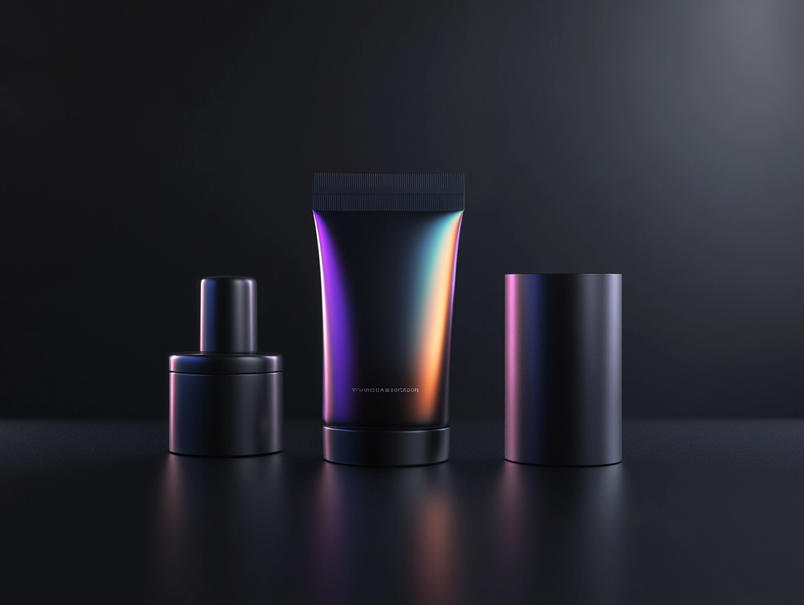
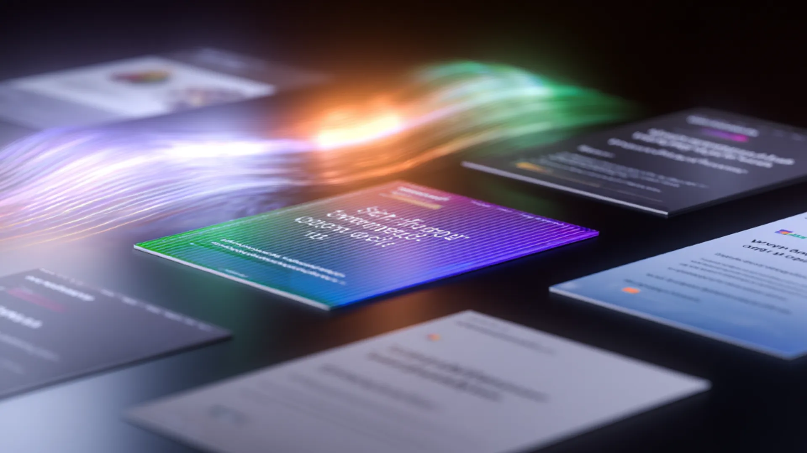

Website · Brand
Creative foundations for brands of all sizes.
A living system for web, brand, and design at Founding Creative — Gelica + Manrope, the mint-and-holographic palette, and the components that ship on foundingcreative.com.
01 — Brand
The marks.
Four expressions of one identity. The wordmark leads in navigation and signatures. The brandmark pairs icon + wordmark for hero lockups. The icon goes anywhere square: favicons, avatars, app tiles. The wave is a textural signature — use it large, behind, and cropped.
Wordmark · White
Wordmark · Black
Brandmark · White

Brandmark · Black
Icon · White

Icon · Black
Wave · Textural signature

Holographic signature
The animated conic gradient + wave overlay + black veil is Founding's most distinctive visual. Deploy it on marquee hero sections and rarely elsewhere — scarcity is the point.
Brand signature · Holo
We make things worth founding.
Flag textures
Animated holo flag loops — reserve for video and splash takeovers. Each background context demands a contrast-safe treatment: white flag on dark, black flag on medium and light.
Clear space & minimum size
Clear space
Reserve clear space equal to the height of the icon's "F" bar on all sides. Never crowd the wordmark with copy or UI chrome.
Minimum size
Wordmark: 80px wide on screen, 20mm in print. Icon: 24px on screen, 8mm in print. Below that, use the favicon variant.
Don't
No outlines, drop shadows, rotations, or rebuilds. Don't place the black wordmark on busy holographic backgrounds — use the white one instead.
02 — Color
Deep black. Mint green.
One prismatic spectrum.
The system lives on a black-first canvas. Mint Green #7EF893 is the single accent — it's what "points at things." The holographic spectrum (cyan, mint, lavender) only appears on hero backgrounds and inside SiteLaunch cards, never as general UI color.
Neutrals
Mint Green — primary accent
Holographic spectrum — hero only
Deep anchors — SiteLaunch cards
Schemes in use
03 — Type
Gelica & Manrope.
A contemporary serif paired with a geometric grotesque. Gelica carries voice, pull-quotes, and display. Manrope carries everything readable — UI, body, captions.
Scale · Desktop
H1 / Display
Creative foundations
H2
Built to fit your process
H3
Your custom website starts here
H4
Prism SiteLaunch
H5
Relationships first
H6
Founding energy in every sprint
Text Lg
We work with people, not logos. Projects start with a shared bar for craft.
Text Base
Body copy lives here. Manrope's tall x-height keeps longer paragraphs legible on dark backgrounds — the default reading size across the site.
Text Sm
UI labels, navigation, card supporting text, captions.
Text Xs
Legal, meta, disclaimers, very small labels.
Weights · when to reach
Gelica 500 · Medium
The default display weight
Headlines, hero titles, section titles, big numbers.
Gelica 500 · Italic
Emphasis only
A single phrase per headline, usually mint-tinted, for the voicey beat.
Manrope 700 · Bold
Taglines & stats
Short all-bold labels under icons; large stat numbers; button labels at scale.
Gelica — full family
All 10 upright weights and their italic counterparts. Reach outside the default (Medium 500) rarely and intentionally — Gelica Black is for press only; Gelica ExtraLight for airy editorial layouts.
Manrope — variable axis
One variable font file covers the full 200–800 weight range. Body copy sits at 400; UI labels and links at 600; section labels and stats at 700.
200 · ExtraLightCreative foundations for brands of all sizes.
300 · LightCreative foundations for brands of all sizes.
400 · Regular ✦Creative foundations for brands of all sizes.
500 · MediumCreative foundations for brands of all sizes.
600 · SemiBold ✦Creative foundations for brands of all sizes.
700 · Bold ✦Creative foundations for brands of all sizes.
800 · ExtraBoldCreative foundations for brands of all sizes.
04 — Spacing, Radius, Shadow
Measured, calm, generous.
An 8pt grid with a 12-column 1140px container inside a 150px gutter. Three radius tiers. Shadows are subtle on dark (real luminance is mostly from the holo gradient, not drop-shadows).
Radius
r-xs · 6
r-sm · 8
r-md · 12
r-lg · 16
r-xl · 24
r-2xl · 32
Shadows & glows
Shadows · use on light or colored surfaces
xs
sm
md
lg
xl
2xl
Glows · use on dark surfaces
mint
cyan
holo-mint
lavender
white
Spacing scale (8pt)
s-1 · 4
inline gaps
s-2 · 8
tag gaps
s-3 · 12
compact
s-4 · 16
card grid gaps
s-5 · 24
content gaps
s-6 · 32
card padding
s-8 · 48
section padding (tight)
s-10 · 80
section vertical
s-13 · 150
page gutter
05 — Iconography
Icons.
Founding Creative uses Lucide for all system UI icons — a consistent 2px stroke library with currentColor fills for automatic theme adaptation.
Usage rules
Stroke
Always 2px, never filled. Lucide's weight visually matches Manrope 400 — they co-exist without tension at all UI scales.
Size
16px for inline and compact UI. 20px for prominent actions and nav items. 24px for hero callouts and empty states.
Color
Always currentColor. Set color on the parent — never hard-code an icon's stroke color directly.
Common icons
check
x
plus
arrow-right
search
external-link
chevron-down
menu
info
star
user
grid
Using Lucide: Load via CDN —
<script src="https://unpkg.com/lucide@latest"></script>, then use <i data-lucide="icon-name"></i> and call lucide.createIcons(). Full library at lucide.dev.
06 — Imagery
Visual language.
Dark, cinematic, and rendered with intent. Founding Creative's imagery pairs AI-generated visuals with real-world craft — moody subjects, dramatic lighting, and motion that feels just out of reach. Every image reinforces capability and precision, never decoration alone.

.png)

Style principles
Dark & Cinematic
Subjects placed in near-shadow with precise accent lighting. Deep black as the base — no cluttered scenes, no stock-photo brightness. Drama comes from restraint.
AI-Generated Craft
Rendered with Midjourney using prompts tuned for cinematic quality, then selected for cohesion with the brand's premium aesthetic. Every frame is intentional.
Motion & Texture
Short-form video and animated loops reinforce the brand's dynamic quality — used in hero positions and editorial contexts, never as background decoration.
05 — Components
The working set.
What ships on foundingcreative.com today. These are the living versions — pair with the React library in /Components.
Buttons
Hover any button to see the holographic spectrum glow ring — a slow conic gradient cycling cyan → holo-mint → lavender → magenta with a soft pulse. The link variant has no ring.
Navbar
Tags & chips
Default · neutral
Brand
Websites
Active engagement
Design systems
Motion
Holographic spectrum
Mint
Cyan
Cyan pale
Holo mint
Lavender
Lavender lt
Dot vs micro-icon
With dot
Check icon
Info icon
Star icon
Hover behaviors (click or hover to preview)
Case study cards
Hover any card below to preview its interaction. Default cards are fully static — all hover effects are opt-in via modifier class.
Static · default
Design system
Atlas — healthcare component library
Event · Motion
Orbit — founder summit identity
Hover · lift
Website · Brand
Prism SiteLaunch — FinFlow
Design system
Atlas — healthcare component library
Event · Motion
Orbit — founder summit identity
Hover · glow
Website · Brand
Prism SiteLaunch — FinFlow
Design system
Atlas — healthcare component library
Event · Motion
Orbit — founder summit identity
Hover · reveal CTA
View case study →
Website · Brand
Prism SiteLaunch — FinFlow
View case study →
Design system
Atlas — healthcare component library
View case study →
Event · Motion
Orbit — founder summit identity
Hover · tint (desaturated until hover)
Website · Brand
Prism SiteLaunch — FinFlow
Design system
Atlas — healthcare component library
Event · Motion
Orbit — founder summit identity
SiteLaunch trio
↗
Prism SiteLaunch
For brands ready to make an unforgettable entrance.
↗
Rocket SiteLaunch
For growth-focused brands ready to fuel conversions.
↗
Orbit SiteLaunch
For scaling companies needing clarity, structure, and alignment.
List item · icon + copy
Short copy · single line
Relationships firstWe work with people, not logos.
Creative systemsAlways building together to drive outcomes.
Founding energyEvery project is a chance for something big.
Long copy · wrapping body text
Relationships first
We work with people, not logos. Every engagement starts with listening — understanding the humans behind the brand, what they're building toward, and what success actually looks like in six months and three years. That clarity shapes everything we make together.
Creative systems, not one-offs
We build systems that scale. A website is never just a website — it's a component library, a content model, a set of decisions that will be inherited and extended by whoever comes next. We think that through from day one, so the work compounds instead of just shipping.
Founding energy in every sprint
Every project is a chance for something big. We show up with the intensity of a founding team, not a vendor relationship — because the work matters more when you treat it that way. That's not a posture. It's how we're built, and it shows in the output.
Two-column grid · mixed copy lengths
Relationships first
Every engagement starts with the humans behind the brand — their goals, constraints, and what they're genuinely building toward.
Built to last
Systems, not snapshots. What we ship should still make sense in two years — and be easy for whoever comes next to extend.
Creative systems
Always building together to drive outcomes that compound over time — not just ship once and move on.
Founding energy
We show up with founding-team intensity, not vendor detachment — because the work matters more when you treat it that way.
06 — Patterns
Sections, assembled.
Three canonical page sections as shipping examples. These are the recipes — same ingredients, consistent outcomes.
Pattern · Hero
Pattern · Full-bleed CTA
Pattern · Footer
Usage
Get it working.
Connect BrandForge to your tools — Claude Design, Claude Code, Canva, and any AI builder. Everything flows from one source of truth.
Quick links
Claude Design
Set up once, connected to this repo, and every session starts with the full token set, component library, and brand rules already loaded.
- 01Go to claude.ai, open Design, and start creating a new design system.
- 02For Company name and blurb, enter:
Founding Creative — brand and web design agency - 03Under Link code on GitHub, paste the repo URL and click Add:
https://github.com/foundingadmin/DesignSystem-FoundingClaude Design pulls in the tokens, components, brand rules, and architecture notes directly from main. - 04Click Continue to generation. Claude Design downloads the repo and you're ready — no skill command needed.
Note: Claude Design downloads a snapshot at setup time — it isn't a live connection. If the design system is updated after you've connected, reconnect the repo to pull in the latest version.
Claude Code
The CLI for developers. Claude Code reads the design system from GitHub and applies correct tokens and components when building or reviewing code.
- 01Open a terminal in any project directory and start a session:
claude - 02Tell Claude to reference the design system:
Reference the Founding Creative design system at https://github.com/foundingadmin/DesignSystem-FoundingClaude will pull in the repo and enforce correct tokens, classes, and brand conventions in everything it writes. - 03Working inside the design system repo itself? Open Claude Code from that directory — it picks up the codebase automatically and no extra setup is needed.
Cursor · Bolt · Lovable · Replit
Any AI-powered editor or builder can use the design system — just point it at the live files or paste the tokens directly into the project.
- 01In your tool's system prompt, rules file, or project context (e.g. .cursorrules, Bolt's system prompt), add:
Use the Founding Creative design system. Fetch tokens and components from: https://github.com/foundingadmin/DesignSystem-Founding Always use the CSS custom properties from tokens.css and class names from components.css. - 02For file-based tools like Cursor or Windsurf, copy css/tokens.css and css/components.css into your project and reference them in your stylesheet imports.
- 03Keep brand.foundingcreative.com open as a visual reference while you build — components, spacing, and color swatches are all live on that page.
Canva
Load the brand palette and typefaces into your Canva Brand Kit so every template starts on-system.
- 01In Canva → Brand Kit → Colors, add the core palette:
Black —#000000Mint —#7EF893Ink —#1C1C1EWhite —#FFFFFF - 02In Brand Kit → Fonts, upload the Gelica OTF files from the repo's /fonts/ folder and set Manrope (available in Canva's font library) as the body typeface.
- 03Use brand.foundingcreative.com as your visual reference for spacing, hierarchy, and component layouts while you design.
Making changes
All changes go through a branch and pull request. Merging to main is the only step — GitHub Pages deploys automatically.
- 01Open Claude Code in the design system repo directory and describe what you want to change — a new component, a token update, a copy edit.
- 02Claude Code edits the relevant files — primarily css/tokens.css or css/components.css — and pushes to a new branch. It will not touch main directly.
- 03Open a pull request from your branch into main at github.com/foundingadmin/DesignSystem-Founding/pulls. Review the diff, confirm everything looks right.
- 04Merge. GitHub Pages detects the change to main and rebuilds the live site automatically. No deploy command, no build step.
Wait about 2–3 minutes after merging, then refresh brand.foundingcreative.com to see your changes live. That's the entire deploy cycle.
Quick reference
HTML
<link rel="stylesheet" href="css/tokens.css">
<link rel="stylesheet" href="css/components.css">
<body>
<nav class="navbar">…</nav>
<button class="btn btn--primary">
See our work
</button>
</body>
Tokens (CSS vars)
color: var(--mint); background: var(--n-black); border-radius: var(--r-lg); font-family: var(--font-display); box-shadow: var(--glow-mint); /* Swap schemes */ <div class="scheme-mint">…</div>
Changelog.
Version history for BrandForge. Follow semantic versioning rules — patch for fixes, minor for new components or backwards-compatible additions, major for breaking changes.
BrandForge · Founding Creative · v1.2 · 2026
Social media.
Founding Creative's social presence maintains the brand's dark, editorial tone — high-contrast visuals, tight typography, and a layout that reads well at thumb-scroll speed. Posts feel curated, not casual.
The look
Clean, grid-aligned layouts with generous space. Visual hierarchy mirrors the design system — one dominant element per frame, supporting copy beneath.
Confident and minimal. Copy is short, punchy, and written in sentence case. Captions elaborate — the visual carries the hook.
Primarily Instagram and LinkedIn. Square and portrait (1:1, 4:5) for feed posts; 9:16 for Stories and Reels. Carousel decks for deeper educational content.